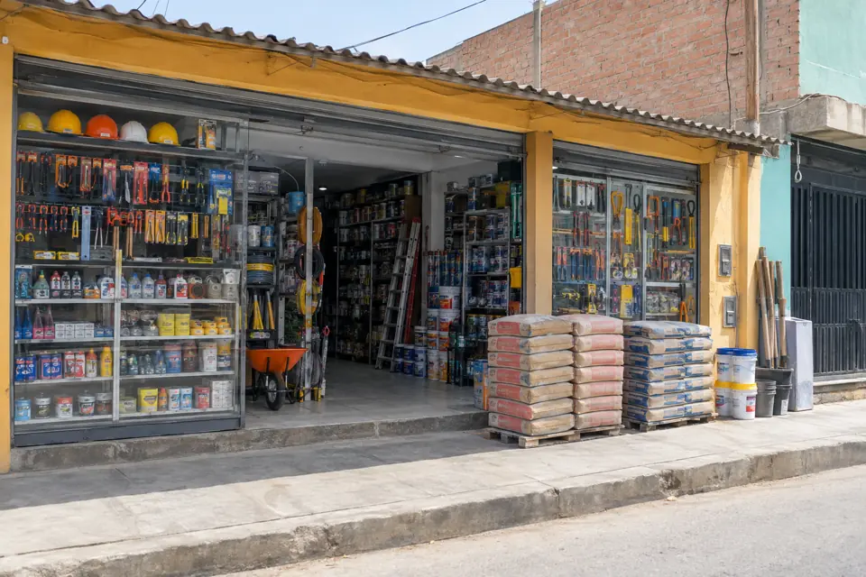

Cemento y agregados
Cemento, arena y piedra chancada, con pedido a domicilio para cantidades grandes.

Atendemos en Chiclayo desde el barrio de Jr. Pedro Ruiz, con herramientas, materiales de construcción y servicios de cerrajería y carpintería para el vecino y para el maestro de obra.
Cemento, arena y piedra chancada, con pedido a domicilio para cantidades grandes.
Martillos, llaves, destornilladores y juegos completos para el taller o la casa.
Candados, chapas y duplicado de llaves al momento.